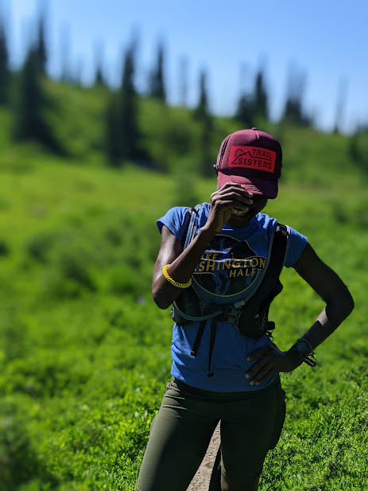
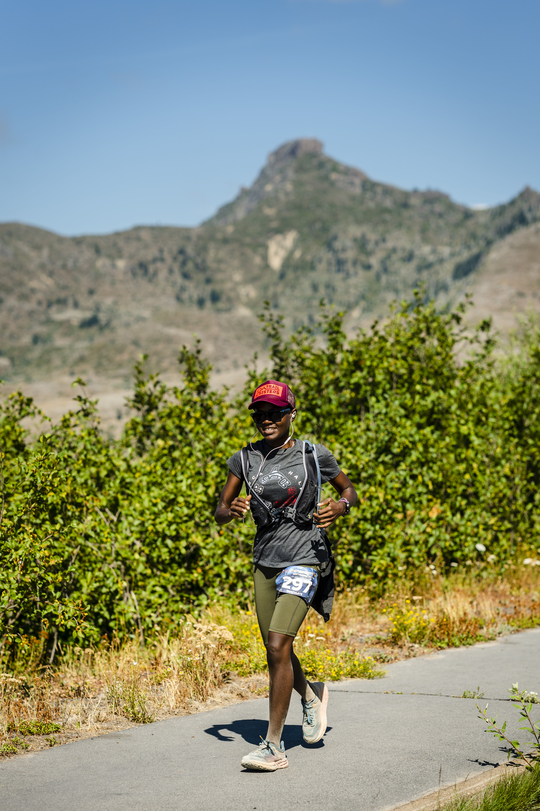

A year ago I did my first trail run and wrote my first trail inspired post. Little did I know of the adventures that were about to unfold. Since then, I’ve not only ran my longest distance in one day (50 miles), I’ve also grown comfortable running ultras. I think that’s wild considering that the half marathon used to be my stretch distance. On reflecting on the wild year, I’d like to share some lessons I learnt.
-
First and foremost, trail running is good for the mind, body and soul. There is something absolutely primal and fulfilling about moving through the woods with your feet, one with nature. I highly encourage you to give it a try if you haven’t. Its harder, you will be slower but you’ll have fun, type 2 kind. My hobbies ussually have one year life span, I expected to have moved on to something else by now but yet here I am, still very excited about trail running. That said, lesson #2 is equally important.
-
Trail running is a very involved activity, you could make a make a career out of it (actually some people have). Coming from road running it took me a while to get acquinted with the much longer race distances, technical terrain, the lingo and the ruggedness of it all. Its a lot more than running on unpaved trails and the deeper you dip your toes the more it becomes about wilderness survival than running. Offline navigation, fording rivers, rock climbing, crab walking are among the many skills I’ve had to add to my repertoire. They were very handy when I was circumnavigating Mount Rainier on the Wonderland trail and other races I ‘ran’.

In a sea of endless trails to explore, hill running techniques to learn, challenging training regimen and countless opportunities to stretch yourself; its even more important to pace yourself. In the long run (pun intended) it will pay in dividends. Having said that, lets talk about ultras. Its hard to talk about trail running without mentioning ultras. Racing is not required for trail running but its a sizeable component of the culture. I love racing and have currently settled into a rhythm of regular 50Ks. With that context (and bias of course) in mind, here is what I learnt.
- A lot can change over the course of an ultra/long run.
Ultras are by definition, super long runs, factor in hills and technical terrain, and you have ridiculously long time on feet. Just like how a lot can change over the course of a day, so it does while running. Don’t let a sub-optimal start stop you from pushing through. I remember starting out a recent 50K not even sure I would be able to run. I had little sleep the night before since I camped in my small car, everything hurt and all I wanted to do was lay down. I dragged myself to the start line, started walking and to my suprise a few miles in I was unstoppable.

I apply this lesson to almost any other long effort I set out to do, be it work or errands. There is always the possibility that things will get better.
-
Patience. Pounding trails for hours is indeed a character building experience, if nothing else sticks, patience will. We spend many hours in our own heads, sometimes contemplating but mostly counting; miles to the next aid station, miles to the finish, time to the next cutoff etc. Over time you embrace the slow and painful journey to the finish line and somehow grow to enjoy it. You come out of it stronger physically and mentally. We rarely get this kind of setting in a world that glorifies fast even though we know achieving anything important requires patience.
-
Control You can prepare for an ultra, but you are never in full control. After all is said and done you are at the mercy of your body, the weather, terrain and whatever else is out in the wild. As someone who likes to be in control, I learnt this lesson the hard way. After struggling through discomfort and almost dropping out of my longest race, it become clearer that tantrums are a waste of precious energy. If things are not going according to plan and there is nothing I can do about it, there is no point fighting but lots to gain from acceptance. Sometimes we loose control and that’s okay, we are afterall just human.

-
There is always next time and yes it does get better. I should know, I felt defeated and barely made cutoff at one of my first ultras. I was heart broken, despite so much time training, anaemia and arthritis got the best of me. I picked up my pieces because training is an intergral part of my life and well there is only one way from rock bottom, up. Through small, almost invinsible adaptations, I’ve grown a lot stronger in a span of a few months. When thinking in short-term, its easy over-index over the low points and give up all-together. With a long-term mindset, defeat is not final, just a setback in the grand scheme of things. You have the rest of your life to finish what you started and that can be a long time.
-
The body knows. As endurance athletes, we are accustomed to ignoring our body’s signals. We force ourselves to get out the door when the coach is seductively calling in all languages, we force ourselves to keep going even after all organs are protesting. Stress is necessary for growth but it is important to strike a balance between listening and ignoring our body’s signals. When I ran the Wonderland, I bailed on a 20 mile section simply I couldn’t take it both physically and mentally. I was exhausted from 35 miles the previous day, sleep deprived and had zero appreciation for the magical wonderland I was in. After hiking 12 miles I took the rest of the day to rest and had a much better the next day. On the surface, it was probably a weak move, but the alternative would have been dangerous and definitely not fun. I honestly still struggle with this, its a learning process, if you’ve somehow mastered it, I’d love to hear from you.
-
Its all starts with doubt, embrace it. At the beginning of the year I wasn’t even sure I could complete a flat marathon without injury let alone a mountain one. Yet I signed up for a mountain 50K, completely unsure if I would even make cutoff. Fast forward, I know I can run even longer distances. There is something magical about learning the limits you thought you had were imaginary, backed by concrete evidence. I learn the most about myself through doubt-filled adventures and despite the outcome I grow stronger. Never underestimate how much you can do in a day, a month, a year heck even a decade.
-
The trail community is probably the best there is. I’m grateful to live in the Pacific North West where there is no shortage of trails, races or community. Whether its because ‘Misery loves company’ as Dean Karnazes put it or there is too much endorphins going around, I have yet to find a community more welcoming and supportive as trail runners. We cheer for the last finisher almost as much as the first, we’ll have happily share miles, snacks and all round good vibes. Watch out, we may actually trick you into running and believing you can do the impossible.
So there you have it, my takeaway after a year frolicking in the most remote yet beautiful places. Its sometimes fun, sometimes sufferfest but always something to look forward to at the end of the week. You can read more of trail adventures on the trail sisters blog or Instagram. In the meantime, happy trails!